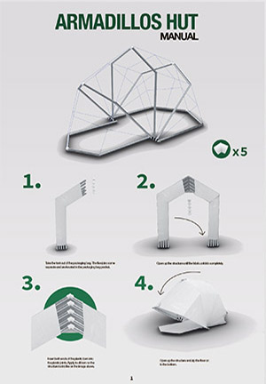
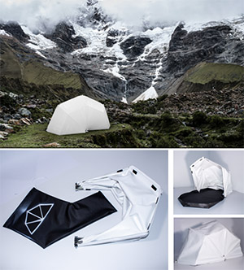
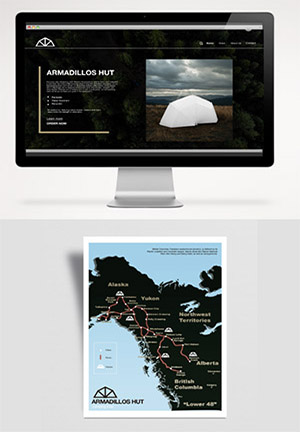

User Experience Design



About this project
The project required a built model of a futuristic and innovative DIY kit for a Future Nomad Shelter. It had to be built Life-size and based on the analysis and reinterpretation of constructive and material strategies developed in Nature (inorganic, animal based etc). The project was originally insiped by the constructive mechanims of the the Admadillo animal. Throuthout 3 months a 3D model was developed using the “Rhino” application and then was built on the 1:2 scale. Along with the model a full branding was done around the tent, including color pallet of the brand, website, manual, packaging and a map of the potential roots.